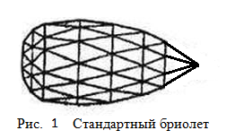

В данном разделе мы создадим модель огранки бриолет (briolette).
Одна из древнейших видов грушевидной огранки драгоценных камней называется "бриолет" – искаженный вариант французского слова "бриньолет" (brignolette), которое означает "сушеная слива из Бриньоля". Внешний вид стандартной огранки бриолет показан на рисунке 1. Она имеет 56 граней и по форме напоминает каплю или грушу. Расположение граней присутствующее в бриолете можно найти в огранках "роза" и "двойная роза". В отличие от других огранок бриолет нелзя разделить на части принадлежащие короне, павильону или рундисту. Эта огранка представляет собой единое целое.
В данном разделе мы построим модель огранки, имеющую больше граней, чем имеет их стандартный бриолет. Создаваемый нами многогранник. будет иметь 209 граней. Также предусмотрим возможность, в зависимости от значения соответствующих параметров, существенно изменять форму модели огранки – особенно вблизи острия огранки и в противоположной острию ее части. По ссылке Briolette - Light Dispersion можно увидеть бриолет отображенный при помощи кубических карт. При нажатии на приведенной по ссылке странице кнопки Inverse многогранник отобразится на черном фоне. Можно посмотреть в окружении кубических карт и на представителя другого типа этих многогранников - так называемый ступенчатый бриолет
У огранок бриолет, кроме тех, которые имеют название крестовая роза, все грани имеют треугольную форму.
У бриолета, который мы создадим, при исходном значении набора параметров огранки грани,
примыкающие к острию, выглядят также как у крестовой розы. Однако изменяя значение параметров
огранки можно четырехугольные грани, сходящиеся к острию, превратить в треугольные путем увеличения значения
параметра h_facet_ratio. При этом и эта часть огранки станет выглядеть также как у стандартного бриолета.
Нумерация вершин острой части создаваемой огранки показана на рисунке 2, а тупой ее части – на рисунке 3.
На рисунке 2 ось OZ огранки направлена в сторону наблюдателя, а на рисунке 3 – вглубь рисунка.
На рисунках 2 и 3 приведена нумерация вершин бриолета.
var lw = 1.8; // Коэффициент растяжения огранки вдоль оси OZ. var vp = 0.0; // Угол, определяющий степень отклонения кривой Ellipse_2 от окружности. // Смотри построение рундиста огранки маркиз. var Lh = 0.34; // Отклонение смещения самого широкого места. // Смотри построение огранки груша. var kY = 0.8; // Коэффициент растяжения огранки вдоль оси OY var square_deviation = 0.0001; // Задает степень отклонения овала, определяющего // форму огранки в поперечном сечении, от эллипса var alpha_1 = 28*DEGREE; // Первый угол определяющий положение вершин на Ellipse_1 var alpha_2 = 62*DEGREE; // Второй угол определяющий положение вершин на Ellipse_1 var beta_1 = 11*DEGREE; // Первый угол определяющий положение вершин на Ellipse_2 var beta_2 = 22*DEGREE; // Второй угол определяющий положение вершин на Ellipse_2 var beta_3 = 33*DEGREE; // Третий угол определяющий положение вершин на Ellipse_2 var gamma_1 = 2 * 90*DEGREE / 8; // Первый угол определяющий положение вершин на овале var gamma_2 = 4 * 90 * DEGREE / 8; // Второй угол определяющий положение вершин на овале var gamma_3 = 6 * 90 * DEGREE / 8; // Третий угол определяющий положение вершин на овале var h_facet_ratio = 0.5; // Определяет положение вершин ближайших к острию var flank_size = 0.1; // Задает размер среза на тупой части огранки
Рассмотрим рисунке 4, на котором изображен бриолет и обозначены восемь вершин определяющих его контур в продольном направлении. Как можно видеть, эти вершины вписаны в линию подобную той, которую мы строили при создании рундиста груши.
Возвращаясь к рисунку 3 того раздела, где рассматривалось построение рундиста груши,
нетрудно увидеть, что вершины 1, 2, 3 и 4 принадлежат кривой Ellipse_1,
а вершины 4, 5, 6, 7 и 8 – кривой Ellipse_2 (вершина 4 является точкой сопряжения двух кривых).
Из рисунка 5 следует, что тупая часть бриолета, чей контур задается кривой Ellipse_1,
разбита на три яруса, а острая часть, чей контур задается кривой Ellipse_2, разделена на четыре яруса граней.
Для определения положения этих ярусов введены пять параметров огранки – Angle alpha 1,
Angle alpha 2, Angle beta 1, Angle beta 2 и Angle beta 3,
смысл которых понятен из рассмотрения приведенных рисунков. На рисунке эти параметры обозначенны
как α1, α2, β1, β2 и β3.
Первые два параметра задают деление на части кривой Ellipse_1, и,
следовательно, соответствующее деление тупой части бриолета. Три последних параметра определяют
деление кривой Ellipse_2 на заостренной части бриолета. В структуру данных модели (СДМ) введены пять полей
соответствующие этим параметрам. Это поля – alpha_1, alpha_2,
beta_1, beta_2 и beta_3.
Размер грани расположенной на срезе (самая левая часть огранки на рисунке 5)
задается параметром Flank size. Этому параметру соответствует поле flank_size в СДМ.
function SetPoints_Ellipse_1(nPoints, angles)
{
// Описание локальныых переменных v и g
// можно найти в разделе посвященном рундисту груши.
var v = lw * Lh - 0.5;
var g = 1.0 + v + v;
if ( v < 0 )
{
return 0;
}
var i;
var arc = [];
for (i = 0; i < nPoints; i++)
{
arc[i] = new Point3D(Math.cos(angles[i]), 0.0, g * Math.sin(angles[i]));
}
return arc;
}
Значения углов alpha_1 и alpha_2 передаются в функцию SetPoints_Ellipse_1 в массиве angles,
который состоит из двух элементов (значение аргумента функции nPoints передаваемое в функцию равно 2).
Координаты точек 2 и 3, показанных на рисунках 4 и 5, функция возвращает в массиве arc.
Названия локальных переменных внутри функции SetPoints_Ellipse_1 и их смысл совпадает с названиями переменных
и их смыслом в функции расчета вершин рундиста груши. Размер одной полуоси эллипса Ellipse_1 равен g
а размер другой полуоси равен 1).
SetPoints_Ellipse_2, которая вычисляет
координаты точек 4, 5, 6 и 7 приведен на следующем истинге:
function SetPoints_Ellipse_2 ( nPoints, // количество точек на дуге эллипса (= 4)
angles) // заданные значения углов 0*DEGREE, beta_1 . . . beta_4
{
var v = lw * Lh - 0.5;
var g = 1.0 + v + v;
if ( g < 0 )
{
return null;
}
var u = 2 * lw - g;
if ( u < 0 )
{
return null;
}
// Замечание:
// Координата Z острия огранки, обозначенная в VerticesCalculation() как max_point_Z
// вычисляется также снаружи данной функции
// var max_point_Z = u;
// Угол носика груши без внешней добавки
// Без внешней добавки имеем окружность, а не эллипс
var fi = Math.asin ( ( u + u ) / ( u * u + 1.0) );
// Угол носика груши с внешней добавкой
var psi = fi + vp;
if ( psi >= Math.PI/2 )
{
null;
}
// Расстояние по оси OX от начала координат до точки,
// где касательная к груши пересекает ось OX
var t = u * Math.tan(psi);
if ( t <= 2.0)
{
null;
}
// Полуось эллипса (смотри создание рундиста груши и
// курсы аналитической геометрии)
var a = ( t - 1.0 ) / ( t - 2.0 );
// Координата x центра эллипса
var s = a - 1.0;
// После долгих (смотри раздел с рундистом груши) вычислений находим вторую ось эллипса
var b = - u * ( 1.0- t ) / Math.sqrt ( t * t - ( t + t ) );
var arc = [];
var i;
for (i = 0; i < nPoints; i++)
{
arc[i] = new Point3D(a * Math.cos(angles[i]) - s, 0.0, b * Math.sin(angles[i]));
}
return arc;
}
При помощи параметра Lh (этот параметр имеет одноименное поле Lh в СДМ),
можно также как и в огранке груша, изменять относительные размеры тупой и острой частей огранки.
Для изменения положения граней в плоскости перпендикулярной оси огранки используются
параметры параметра Angle gamma 1, Angle gamma 2 и Angle gamma 3.
В СДМ этим параметрам соответствуют поля gamma_1, gamma_2 и
gamma_3. На рисунке 6 показано как значения этих параметров, обозначенные как γ1,
γ2 и γ3, связаны с геометрией огранки.
SetPoints_Oval, в которой производится
вычисление координат девяти точек эллипса:
function SetPoints_Oval(
nPoints, // количество точек на дуге эллипса (= 9)
angles) // заданные значения углов gamma_1, gamma_2 и gamma_3
{
if ( square_deviation < -1 || square_deviation >= 0.995 )
return null;
var p = 2 / ( 1 - square_deviation );
var x, y, w;
var arc = [];
var i;
for (i = 0; i < nPoints; i++)
{
x = Math.cos(angles[i]);
y = Math.sin(angles[i]);
w = Math.pow (Math.abs (x), p) + Math.pow (Math.abs (y), p);
w = 1 / Math.pow ( w, 1/p );
arc[i] = new Point2D(w * x, kY * w * y);
}
return arc;
}
Только координаты четырех из этих точек совпадают с координатами четырех вершин огранки
огранки – 65, 66, 67 и 68. Эти вершины лежат в том в том месте огранки,
где она имеет максимальный диаметр. Координаты остальных вершин огранки определяются
умножением полученных значений на значения, полученные в результате вызова пары функций
SetPoints_Ellipse_1 и SetPoints_Oval или функций
SetPoints_Ellipse_2 и SetPoints_Oval.
VerticesCalculation, в которой вычисляются координаты всех вершин бриолета,
можно найти в файле briolette_verts.js. Особое внимание следует обратить на ту часть исходного текста,
в которой находятся уравнения плоскостей, в которых лежат четырехугольные грани,
сходящиеся в острие огранки. Для определения направления векторов,
используемых при нахождении уравнений этих плоскостей, используется свойство касательной к эллипсу,
которое заключается в том, что произведение координаты проекции точки касания на ось эллипса
и значение координаты точки пересечения касательной с этой осью,
равно значению квадрата соответствующей полуоси эллипса (строки 260 - 325 файла briolette_verts.js).
В данном разделе приведен пример построения только одного, но, пожалуй, самого сложного, варианта огранки бриолет. Обычно другие варианты огранки бриолет имеют меньшее количество граней, и, используя, как пример, приведенное построение можно создать огранки бриолет с другим количеством граней и их взаимным расположением. Пример такой огранки, в которой вместо треугольных фасет, везде, кроме крайних противоположных частей огранки, используются прямоугольные грани, приведен на рисунке 7. Эту огранку можно назвать ступенчатым бриолетом. Ступенчатый бриолет отображенный при помощи кубических карт Briolette - Light Dispersion